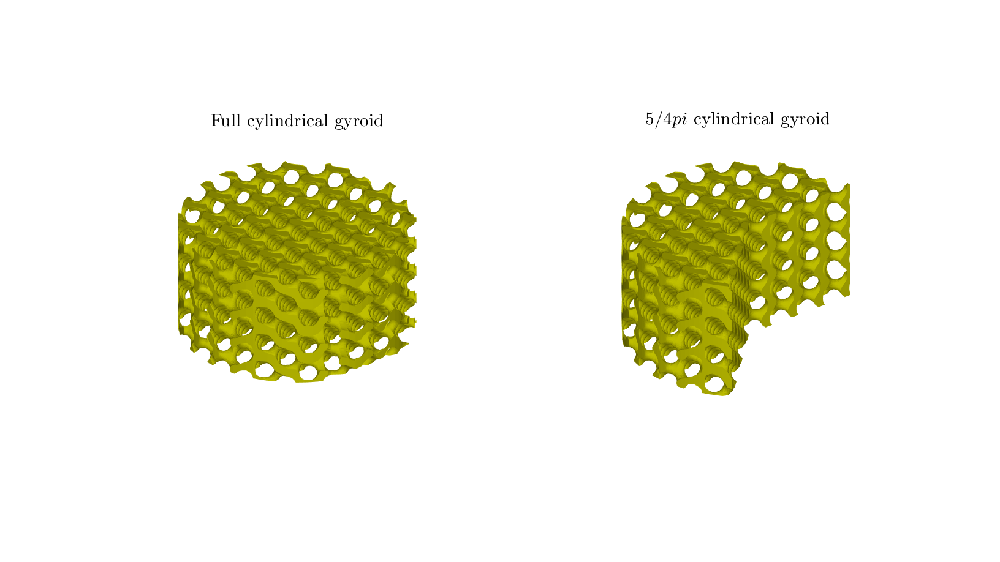
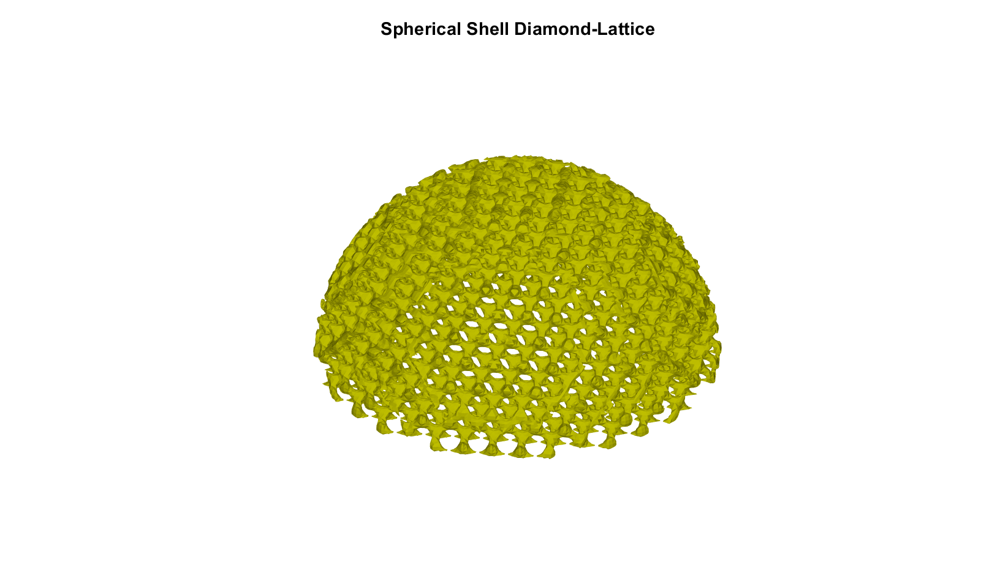
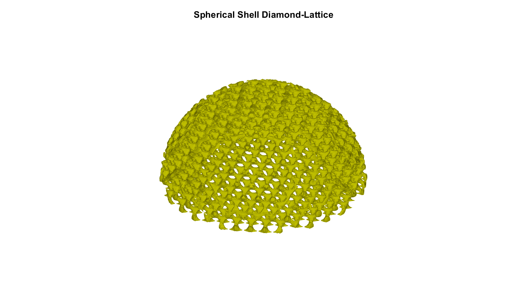

DEMO_0006_Spherical_Cylindrical_Boundary
This is a demo for:
- Building geometry for TPMS structures in spherical and cylindrical coordinates.
- Example-1: TPMS in cylindrical coordinates in full cilinder and 5/4pi.
- Example-2: TPMS in spherical coordinates.
Contents
Name
License: to license
Author: Mahtab Vafaee, mahtab.vafaee@gmail.com
Change log: 2023/11/15 MV Created 2024/02/1 MV Added Examples 1 & 2 ----------------------------------------------------------------------
clear; close all; clc;
Plot settings
fontSize=20; faceAlpha1=0.8; markerSize=10; lineWidth1=3; lineWidth2=4; markerSize1=25;
Control parameters
res=100; %Resolution L=3; %Length size Rg=3; %cylindrical radius R=1; %Outter radius r=0.5; %Inner radius
Example-1: Cylindrical TMPS (Figure-6(c,d))
Set parameters for individual gyroid
inputStruct_A.L=L; % characteristic length inputStruct_A.R=Rg; inputStruct_A.Ns=res; % number of sampling points inputStruct_A.isocap=1; %Option to cap the isosurface inputStruct_A.surfaceCase='g'; %Surface type inputStruct_A.surfaceSide=-1; inputStruct_A.numPeriods=[8 8 8]; %Number of periods in each direction inputStruct_A.levelset=-0.7; %Isosurface level inputStruct_A.gradiantF=0; %Gradiant Factor levelset_A=inputStruct_A.levelset; levelset=inputStruct_A.levelset; % Structure_B: 5/4pi cross section inputStruct_B=inputStruct_A; inputStruct_B.thetaMax=5/4*pi; % Compute cylindrical gyroid % No need to store faces and vertices, only require underlying S, % grid coordinates, and levelset values [Fa,Va,Ca,S_A,~,~,~,~,~]=CylindricalTPMS(inputStruct_A); [Fb,Vb,Cb,S_B,~,~,~,~,~]=CylindricalTPMS(inputStruct_B); % Structure_A: Using grouping to keep only largest group groupOptStruct.outputType='label'; [G,~,groupSize]=tesgroup(Fa,groupOptStruct); %Group connected faces [~,indKeep]=max(groupSize); %Index of largest group % Keep only largest group Fa=Fa(G==indKeep,:); %Trim faces Ca=Ca(G==indKeep,:); %Trim color data [Fa,Va]=patchCleanUnused(Fa,Va); %Remove unused node % Structure_B: Using grouping to keep only largest group groupOptStruct.outputType='label'; [G,~,groupSize]=tesgroup(Fb,groupOptStruct); %Group connected faces [~,indKeep]=max(groupSize); %Index of largest group % Keep only largest group Fb=Fb(G==indKeep,:); %Trim faces Cb=Cb(G==indKeep,:); %Trim color data [Fb,Vb]=patchCleanUnused(Fb,Vb); %Remove unused node % Visualizing geometry cFigure; hold on; subplot(1,2,1); title('Full cylindrical gyroid','FontSize', fontSize, Interpreter='latex') gpatch(Fa,Va,[0.75, 0.75, 0],'none', 1); axisGeom(gca,fontSize); axis off; camlight headlight; drawnow; subplot(1,2,2); title('$5/4pi$ cylindrical gyroid','FontSize', fontSize, Interpreter='latex') gpatch(Fb,Vb,[0.75, 0.75, 0],'none', 1); axisGeom(gca,fontSize); axis off; camlight headlight; drawnow;
Example-2: Spherical TMPS (Figure-6(c,d))
surfType='d'; %'g' for Figure-6(a), 'd' for Figure-6(b) inputStruct.L=[2 2 2]; % characteristic length inputStruct.Ns=res; % number of sampling points inputStruct.isocap=1; %Option to cap the isosurface inputStruct.surfaceCase=surfType; %Surface type % Set parameters & Compute individual gyroids switch surfType case 'g' inputStruct.numPeriods=[10 10 10]; %Number of periods in each direction inputStruct.levelset=0.75; %Isosurface level inputStruct.gradiantF=0; %Gradiant Factor levelset=inputStruct.levelset; [~,~,~,S,X,Y,Z]=SphericalTPMS (inputStruct); case 'd' inputStruct.numPeriods=[10 10 10]; inputStruct.levelset=0.6; inputStruct.gradiantF=0 ; %Gradiant Factor levelset=inputStruct.levelset; inputStruct.surfaceCase='d'; [~,~,~,S,X,Y,Z]=SphericalTPMS (inputStruct); end % Outter Surface Ind_out=find(((X.^2 + Y.^2 + Z.^2) < R) & (0 <Z & Z<(sqrt(R^2-(X.^2 + Y.^2))))); Logic_out= ismember(1:size(X(:)) , Ind_out); Logic_out=reshape(Logic_out,size(X)); % Inner surface Ind_in=find((X.^2 + Y.^2 + Z.^2) < r); Logic_in= ismember(1:size(X(:)) , Ind_in); Logic_in=reshape(Logic_in,size(X)); % Selecting domain of intrest keepLogic= and (Logic_out, ~Logic_in); Sn=double(keepLogic); Sn(keepLogic)=S(keepLogic); sv3(Sn); %Visualize Sn field % isosurface over the spherical shell [F,V]=isosurface(X,Y,Z,Sn,levelset); C=zeros(size(F,1),1); % Using grouping to keep only largest group groupOptStruct.outputType='label'; [G,~,groupSize]=tesgroup(F,groupOptStruct); %Group connected faces [~,indKeep]=max(groupSize); %Index of largest group % Keep only largest group F=F(G==indKeep,:); %Trim faces C=C(G==indKeep,:); %Trim color data [F,V]=patchCleanUnused(F,V); %Remove unused nodes % Visualizing geometry cFigure; hold on; title('Spherical Shell Diamond-Lattice','FontSize', fontSize) gpatch(F,V,[0.75, 0.75, 0],'none', 1); axisGeom(gca,fontSize); axis off; camlight headlight; drawnow;
 
